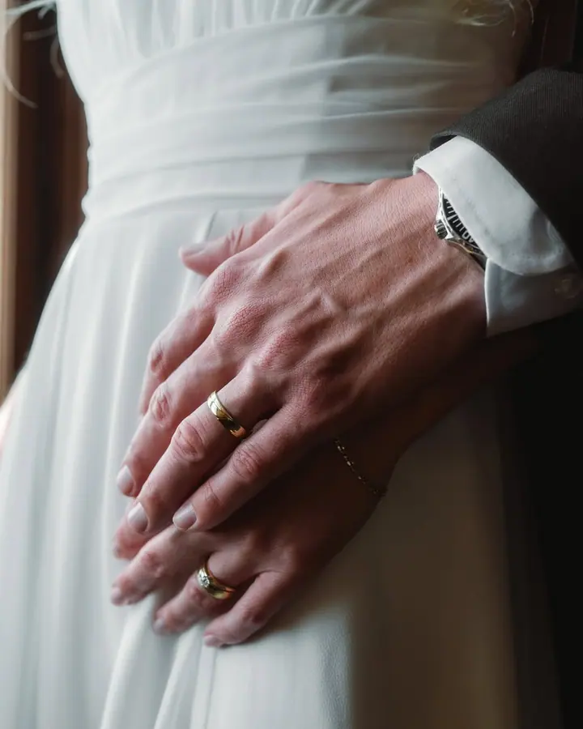
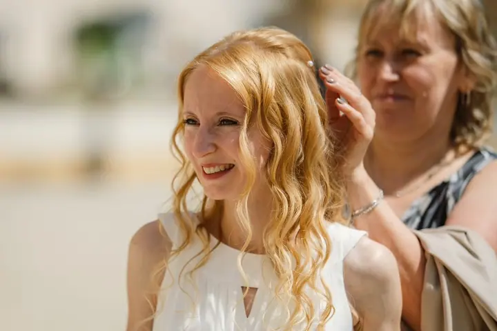

Svatební fotografování
Nejdřív mě zajímá, jak si svůj den představujete, a podle toho přizpůsobím svůj přístup. Většinu dne fotím nenápadně, při společném focení vás rád povedu. Balíčky od 2–3 hodin (6 900 Kč) až po celý den (12 hodin, 19 900 Kč).




Jmenuji se Ladislav Kružík a jsem svatební fotograf z Vysočiny. Kromě svateb fotím také rodiny, páry a maminky v očekávání. Věřím, že dobré fotografie vznikají hlavně tehdy, když se cítíte přirozeně a fotoaparát vás nemusí zajímat.
Více o mně
„Když je potřeba, poradím a pomohu. Když ne, nechám den plynout vlastním tempem.“
— Ladislav Kružík
Nejdřív mě zajímá, jak si svůj den představujete, a podle toho přizpůsobím svůj přístup. Většinu dne fotím nenápadně, při společném focení vás rád povedu. Balíčky od 2–3 hodin (6 900 Kč) až po celý den (12 hodin, 19 900 Kč).
Společné focení pro dva bez spěchu a zbytečného stresu. Platí stejné balíčky jako u rodinného focení, 45 nebo 90 minut.
Přirozené fotografie v klidném tempu, klidně i s vaším domácím mazlíčkem. 45 minut za 2 800 Kč nebo 90 minut za 3 900 Kč pro větší rodiny a více lokalit.
Těhotenství uteče rychleji, než se zdá. Focení přizpůsobíme tomu, co je vám příjemné, a pokud budete chtít, rádi zapojíme partnera, děti nebo čtyřnohého parťáka.
Věřím, že práce svatebního fotografa nezačíná stiskem spouště, ale důvěrou a dobrou přípravou. Proto se nejdřív ptám, jak si svůj den představujete, a podle toho přizpůsobím celé fotografování. Chci být nejen fotografem, ale i člověkem, na kterého se můžete během dne spolehnout.
Většinu dne fotím nenápadně, protože ty nejlepší fotografie podle mě nevznikají, když se díváte do objektivu, ale když svůj den opravdu prožíváte. Pohledy, úsměvy, objetí a drobné detaily, kterých si možná ani nevšimnete. Při společném focení vás rád povedu, abyste nemuseli přemýšlet, co zrovna dělat.
Barevné i černobílé fotografie beru jako dva různé pohledy na stejný den, a proto se vás vždycky zeptám, jaký k černobílé máte vztah. Domovem mého fotografování je Vysočina, ale rád za vámi přijedu kamkoliv po České republice. Na blogu pak sdílím tipy a postřehy ze světa fotografování.
Popovídáme si o vaší představě, projdeme harmonogram a všechno, co je pro vás důležité. Vy budete vědět, co čekat, a já poznám vás i vaše přání.
U balíčků od 6 hodin je součástí hodinové předsvatební focení. Vyzkoušíte si focení předem a ve svatební den už nebudeme cizinci.
Jsem vám nablízku, když je potřeba poradit nebo pomoci. Jinak nechávám den plynout jeho vlastním tempem a nenápadně fotím.
Fotografie pečlivě vyberu a upravím a do tří týdnů je dostanete v přehledné online galerii. Snadno je sdílíte s blízkými a můžete si z ní objednat i tisky.
Nejčastěji fotím na Vysočině, ale rád za vámi přijedu kamkoliv po celé České republice. U svatebních balíčků je doprava do 100 km zdarma, u rodinného a těhotenského focení do 40 km.
Ideálně co nejdříve, hlavně pokud plánujete svatbu nebo focení v hlavní sezóně. Na zprávy odpovídám osobně, obvykle do jednoho pracovního dne.
Obojí. Na předsvatební schůzce se vás zeptám, jaký máte vztah k černobílým fotografiím, a finální výběr přizpůsobím vašemu vkusu.
U rodinného a těhotenského focení při nepříznivém počasí společně vybereme nový termín, a to bez jakýchkoliv poplatků.
info@ladislavkruzik.cz
Vysočina · celá Česká republika